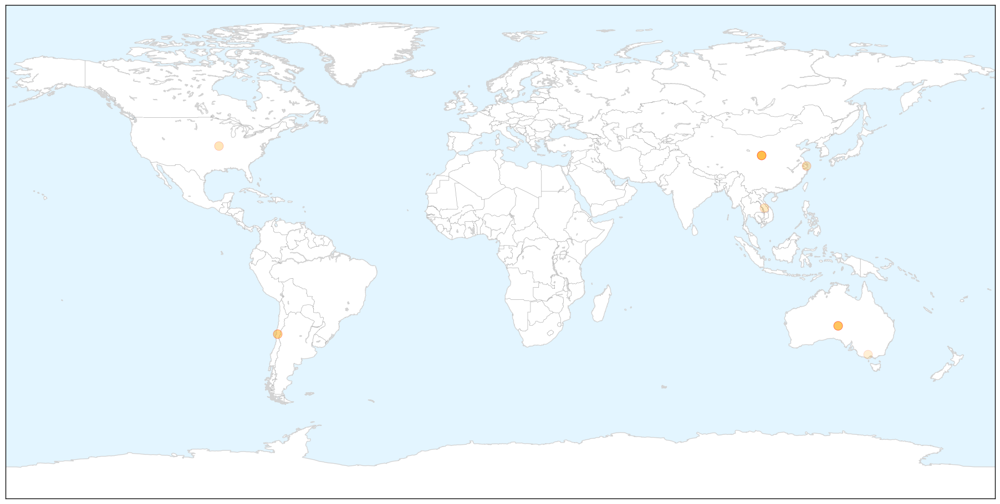

Toggle navigation
Early Warning
Return to Dashboard
Points of Interest
About the Project
Hepatitis
Feb 17, 2015
Compare to:
-
Dengue Fever
Hemmorhagic Fever
Mold/Fungal Infection
Influenza
Meningitis
Pertussis / Whooping Cough
Middle East Respiratory Syndrome
Cholera
Chikungunya
Yellow Fever
Bubonic Plague
West Nile Virus
Swine Flu
Ebola
Measles
Unknown
Mumps
30 Day Trends
Web: 7
alerts
, 0
warnings
Twitter: 0
alerts
, 0
warnings
Top Articles:
0.925
Australians Get Hepatitis A From Chinese Berries
0.918
Ban on golgappa proposed in Berhampur due to jaundice
0.881
Australians Get Hepatitis After Eating Contaminated Berries from China
0.870
Nanna's berry recall sparks Hepatitis A blood donor concern
0.839
Hepatitis cases blamed on berries from China
0.825
Public Health Services and Systems Research Explored in Latest Issue of the American Journal of Public Health
0.819
Toxic river flows through Chinese city where hepatitis a berries are grown
0.772
Photos show why we should all think twice before buying 'fresh' food from China
0.742
Australian Food Company recalls Raspberry Products
0.717
I have a patent for creating HIV/AIDS Virus: Dr. Robert Gallo
0.652
First case of berry-related hepatitis A confirmed in WA
0.561
Blood donors asked to contact Red Cross over hepatitis A fears
0.535
Raspberries common link in hep A outbreak
0.511
Red Cross quarantines blood over Hepatitis A berry outbreak
0.500
Ballarat Secondary College students exposed to hepatitis A berries
Top Tweets:
No tweets found for Feb 17, 2015
Web/News Articles
X
Tweets
X
Article Locations
X

Article Confidences
X